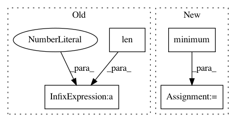

7c8af7a941f49539f2d5eb1b17d61952fc70e2bc,niftynet/layer/resampler.py,ResamplerLayer,_resample_inv_dst_weighting,#ResamplerLayer#Any#Any#,171
Before Change
all_coords = tf.transpose(
all_coords,
[0, len(coords_shape) - 1] + range(1, out_spatial_rank + 2))
knots_id = tf.gather_nd(all_coords, weight_id)
knots_id = tf.transpose(
knots_id, [0] + range(2, out_spatial_rank + 3) + [1])
After Change
point_weights = tf.pow(point_weights, self.power / 2.0)
point_weights = tf.reciprocal(point_weights)
// workaround for zero weights
point_weights = tf.minimum(point_weights, 1e12)
// transpose to shape inds: [0, -1, others]
all_coords = tf.transpose(
all_coords, [0, len(out_size)] + range(1, len(out_size)))
In pattern: SUPERPATTERN
Frequency: 3
Non-data size: 4
Instances
Project Name: NifTK/NiftyNet
Commit Name: 7c8af7a941f49539f2d5eb1b17d61952fc70e2bc
Time: 2017-10-24
Author: wenqi.li@ucl.ac.uk
File Name: niftynet/layer/resampler.py
Class Name: ResamplerLayer
Method Name: _resample_inv_dst_weighting
Project Name: nipy/dipy
Commit Name: ee5e9a5a7320bac1b2ed27957e3a7087fdddbcad
Time: 2010-07-26
Author: christopher.t.nguyen@gmail.com
File Name: dipy/core/stat/resampling.py
Class Name:
Method Name: jackknife
Project Name: CellProfiler/CellProfiler
Commit Name: 475722f1825d7c54fd27fb42723874ecc30b8f5d
Time: 2011-02-02
Author: leek@1fc53939-2000-0410-845c-e8453a809027
File Name: cellprofiler/modules/reassignobjectnumbers.py
Class Name:
Method Name: copy_labels